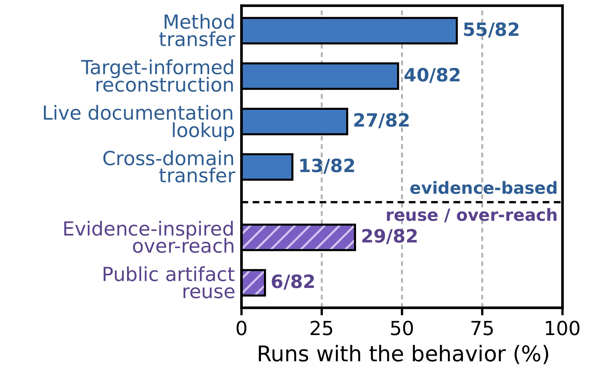
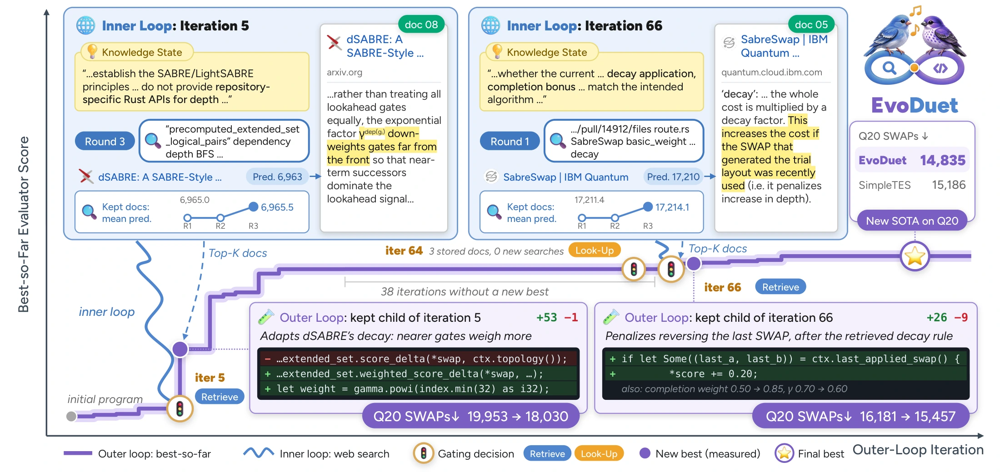
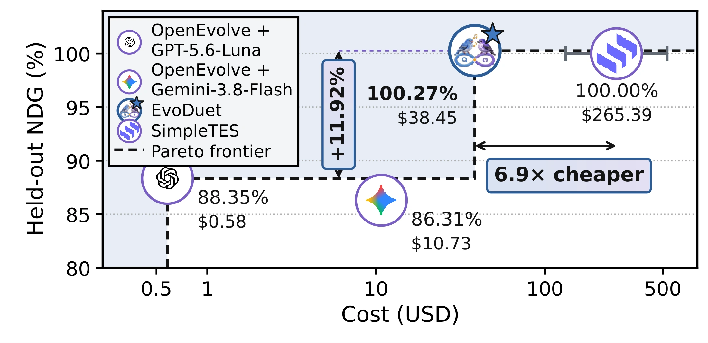

Document use


 EvoDuet
Bilevel Co-Evolution of Web Searching
EvoDuet
Bilevel Co-Evolution of Web Searching
EvoDuet co-evolves solutions and web search queries for scientific discovery, with fixed model parameters. A retrieval gate chooses between new searches, stored documents, and existing knowledge. Queries are refined using predicted solution scores; evaluated candidates inform later searches. Across 21 optimization tasks, EvoDuet raises normalized discovery gain from 74.1% to 78.0% for GPT-5.6-Luna and from 61.3% to 82.3% for Gemini-3.8-Flash at N = 1. Qwen3.5-9B does not benefit. Selected best runs improve on eight previously reported scores and match three.
N = 1: one candidate is generated at each iteration in both methods.
NDG measures progress from the initial program (0%) to the reference (100%). At iteration 100, per-task bests across up to four eligible runs are averaged equally. Differences are percentage points. Data ↓
| Model | Budget | OpenEvolve | + EvoDuet | Δ (pp) |
|---|---|---|---|---|
| GPT-5.6-Luna | N = 1 | 74.1 | 78.0 | +3.9 |
| GPT-5.6-Luna | N = 8 | 79.1 | 83.6 | +4.5 |
| Gemini-3.8-Flash | N = 1 | 61.3 | 82.3 | +21.0 |
| Gemini-3.8-Flash | N = 8 | 85.4 | 86.9 | +1.5 |
| Qwen3.5-9B | N = 1 | 66.8 | 52.4 | −14.4 |
| Qwen3.5-9B | N = 8 | 64.7 | 60.0 | −4.7 |
8 improvements · 3 matches Visualizations & source →
| Task | Previous best | EvoDuet | Outcome | Cost |
|---|---|---|---|---|
| Swap Reduction ↓ | 15,186 | 14,835 | Improved | $50.90 |
| Rosetta ↓ | 1.552968 | 1.396424 | Improved | $44.12 |
| Voyager 2 ↓ | 3.430214 | 3.430206 | Improved | $43.02 |
| Denoising ↑ | 0.722690 | 0.722906 | Improved | $38.45 |
| Domain mixture ↑ | 0.996922 | 0.997062 | Improved | $15.84 |
| Parallel scaling ↑ | 0.999970 | 0.999975 | Improved | $11.93 |
| Erdős ↓ | 0.380868 | 0.380859 | Improved | $29.55 |
| Hadamard ↑ | 0.935673 | 0.935673 | Matched | $27.33 |
| Sums/Diffs ↑ | 1.144887 | 1.144999 | Improved | $161.33 |
| Circle packing (n = 26) ↑ | 2.635983 | 2.635983 | Matched | $36.33 |
| Circle packing (n = 32) ↑ | 2.939573 | 2.939573 | Matched | $42.32 |
Selected runs, separate from the aggregate comparison. Rosetta and Erdős reuse published artifacts. Matches are at displayed precision.


@misc{lee2026evoduet,
title = {{EvoDuet}: Bilevel Co-Evolution of Web Searching
and Task Solving for Scientific Discovery},
author = {Lee, Young-Jun and Baek, Jinheon and Jeong, Soyeong
and Kang, Minki and Jwa, Seungyeon and Choi, Jonghyun
and Han, Seungho and Kang, Dongyeop},
year = {2026},
url = {https://open-galapagos.github.io/evoduet_project_page/}
}